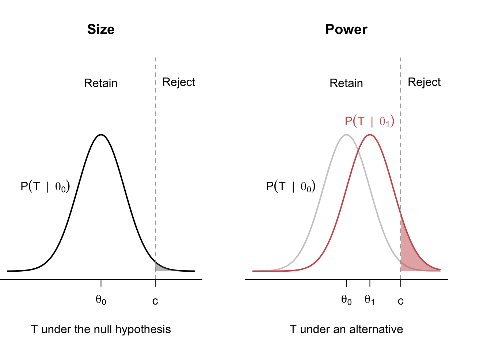
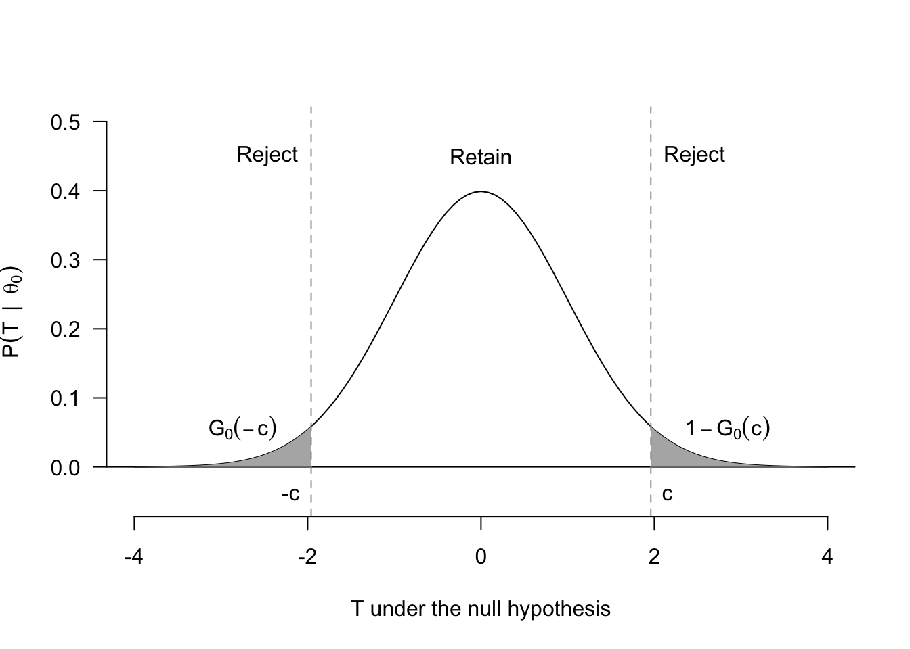
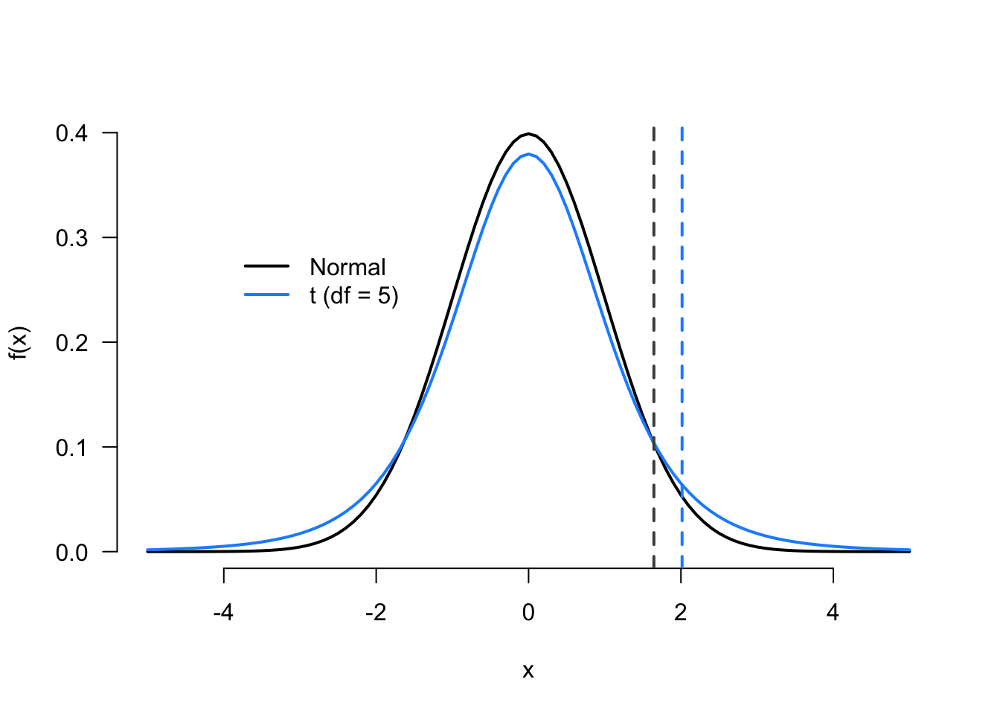

4 Hypothesis tests
We have up to now discussed the properties of estimators that allow us to characterize their distributions in finite and large samples. These properties allow us to say, for example, that our estimated difference in means is equal to a true average treatment effect on average across repeated samples or that it will converge to the true value in large samples. These properties, however, are properties of repeated samples. Most researchers, on the other hand, will only have access to a single sample. Statistical inference is the process of using a single sample to learn about population parameters. As we will see, many common techniques of statistical inference are intuitively closely connected. One of the most ubiquitous in the social sciences is the hypothesis test, a kind of statistical thought experiment.
4.1 The Lady Tasting Tea
The story of the Lady Tasting Tea exemplifies the core ideas behind hypothesis testing.1 The story goes like this. R.A. Fisher, the early 20th-century British polymath and statistical pioneer, had prepared tea for his colleague, the algologist Muriel Bristol. Knowing that she preferred milk in her tea, he poured milk into a tea cup and then poured the hot tea into the milk and swirled it around. But Bristol rejected the cup, stating that she preferred pouring the tea first, then the milk. Fisher was skeptical of the idea that anyone could tell the difference between a cup poured milk-first versus tea-first, and so he and another colleague, William Roach, devised a test to see if Bristol could tell the difference between the two preparation methods.
Fisher and Roach prepared 8 cups of tea, four with the milk poured first and four with the tea poured first. Then they presented the cups to Bristol in a random order (though she knew there were four of each type), and she proceeded to identify all of the cups correctly. At first glance, this seems like good evidence that she could tell the difference between the two types of tea, but Fisher, being a natural skeptic, raised the question, “Could she have just been randomly guessing and got lucky?” This led Fisher to a statistical thought experiment: what would the probability of identifying the correct cups be if she was guessing randomly?
To calculate the probability of Bristol identifying the four milk-first cups correctly, note that “randomly guessing” would mean that she was selecting a group of 4 cups to be labeled milk-first from the 8 cups available. Using basic combinatorics, there are 70 ways to choose 4 cups among 8, but only 1 of those arrangements would be correct. Thus, if randomly guessing means choosing among those 70 options with equal chance, then the probability of guessing the right set of cups is 1/70 or \(\approx 0.014\). The low probability implies that the hypothesis of random guessing may be implausible.
The story of the Lady Tasting Tea encapsulates many of the core elements of hypothesis testing. Hypothesis testing is about taking our observed estimate (Bristol identifying all four cups correctly) and seeing how likely that observed estimate would be under some assumption, or hypothesis, about the data-generating process (Bristol was randomly guessing). When the observed estimate is unlikely under the maintained hypothesis, we might view this as evidence against that hypothesis. Thus, hypothesis tests help us assess evidence for particular guesses about the DGP.
NoteNotation alert
For the rest of this chapter, we will introduce the concepts following the notation in the past chapters. We will assume a random (iid) sample of random variables \(X_1, \ldots, X_n\) from a distribution, \(F\). We’ll focus on estimating some parameter, \(\theta\), of this distribution (like the mean, median, variance, etc.), and we will refer to \(\Theta\) as the set of possible values of \(\theta\) or the parameter space.
4.2 Hypotheses
In the context of hypothesis testing, hypotheses are simply statements about the population distribution. In particular, we will make statements that \(\theta = \theta_0\) where \(\theta_0 \in \Theta\) is the hypothesized value of \(\theta\), a population parameter. Hypotheses are ubiquitous in empirical work. Examples include:
- The population proportion of US citizens who identify as Democrats is 0.33.
- The population difference in average voter turnout between households who received get-out-the-vote mailers vs. those who did not is 0.
- The difference in the average incidence of human rights abuse in countries that signed a human rights treaty vs. those countries that did not sign is 0.
Each of these is a statement about the true DGP. The latter two are examples where the hypothesis is phrased as a possible non-difference, which is very common. When \(\theta\) represents the difference in means between two groups, then \(\theta = 0\) is the hypothesis of no actual difference in population means or no treatment effect (if the causal effect is identified).
The goal of hypothesis testing is to adjudicate between two complementary hypotheses.
Definition 4.1 The two hypotheses in a hypothesis test are called the null hypothesis and the alternative hypothesis, denoted as \(H_0\) and \(H_1\), respectively.
These hypotheses are complementary, so if the null hypothesis is \(H_0: \theta \in \Theta_0\), then the alternative hypothesis is \(H_1: \theta \in \Theta_0^c\). The “null” in null hypothesis may seem odd until you realize that most null hypotheses are that there is no effect of some treatment or no difference in means. For example, suppose that \(\theta\) is the difference in mean support for increasing legal immigration between a treatment group that received a pro-immigrant message with some facts about immigration and a control group that just received the immigration facts. The usual null hypothesis would be no difference in means or \(H_0: \theta = 0\), and the alternative would be \(H_1: \theta \neq 0\). Substantively, the null hypothesis would posit no average difference in the outcome – in this case support for increasing legal immigration – between the two groups.
There are two common types of tests that differ in terms of the form of their null and alternative hypotheses. A two-sided test is of the form \[ H_0: \theta = \theta_0 \quad\text{versus}\quad H_1: \theta \neq \theta_0, \] where the “two-sided” part refers to how the alternative contains values of \(\theta\) above and below the null value \(\theta_0\).
A one-sided test is of the form \[ H_0: \theta \leq \theta_0 \quad\text{versus}\quad H_1: \theta > \theta_0, \] or \[ H_0: \theta \geq \theta_0 \quad\text{versus}\quad H_1: \theta < \theta_0. \] Where the “one-sided” part refers to how the alternative contains values of \(\theta\) only above or below the null value. Two-sided tests are much more common in the social sciences, mostly because we usually want to know if there is any evidence, positive or negative, against the presumption of no treatment effect or no relationship between two variables. One-sided tests are best suited for situations with clear, directional hypotheses that are ideally preregistered before collection of the data. Preregistration of the direction of a one-sided test is important because researchers changing the direction of the hypothesis after seeing the data can inflate the strength of evidence against the null. For this reason, one-sided tests outside of preregistered settings should be used with extreme caution. That said, unfortunately, the math of two-sided tests is also more complicated.
4.3 The procedure of hypothesis testing
At the most basic level, a hypothesis test is a rule that specifies values of the sample data for which we will decide to reject the null hypothesis. Let \(\mathcal{X}_n\) be the range of the sample—that is, all possible vectors \((x_1, \ldots, x_n)\) that have a positive probability of occurring. A hypothesis test then describes a region of this space, \(R \subset \mathcal{X}_n\), called the rejection region where when \((X_1, \ldots, X_n) \in R\) we will reject \(H_0\) and when the data is outside this region, \((X_1, \ldots, X_n) \notin R\) we retain, accept, or fail to reject the null hypothesis.2
How do we decide what the rejection region should be? Even though we define the rejection region in terms of the sample space, \(\mathcal{X}_n\), working with the entire vector of data can be unwieldy. We instead usually formulate the rejection region in terms of a test statistic, \(T = T(X_1, \ldots, X_n)\), where the rejection region becomes \[ R = \left\{(x_1, \ldots, x_n) : T(x_1, \ldots, x_n) > c\right\}, \] where \(c\) is called the critical value. This expression says that the rejection region is the collection of possible data sets that make the test statistic sufficiently large. Thus, the test statistic is a function of the data that should get larger as the observed data becomes incompatible with the null hypothesis. The critical value (and thus the rejection region) demarcates when the divergence between the observed data and the null hypothesis is large enough to allow us to reject the null hypothesis. Note that the test statistic is a random variable and has a distribution. We will exploit this later to better understand the different properties of a hypothesis test.
Consider a simple one-sided test where you feel a bit ill and try to determine if you have a normal body temperature of 98.7 degrees Fahrenheit or if you have a fever. In this case, the thermometer reading is the test statistic since a larger reading are less consistent with a normal body temperature. Thermometers, however, are imperfect and noisy tools, so the reading might differ from 98.7 even if one’s temperature is normal. Thus, we can use a rejection region such as readings over 100.5 degrees to determine when to reject the null hypothesis of a normal body temperature.
Example 4.1 Suppose that \((X_1, \ldots, X_n)\) represents a sample of US citizens where \(X_i = 1\) indicates support for the current US president and \(X_i = 0\) means opposition (no support). A good and reasonable null hypothesis is that the president does not have the support of a majority of American citizens. Let \(\mu = \E[X_i] = \P(X_i = 1)\). Then, a one-sided test would compare the two hypotheses: \[ H_0: \mu \leq 0.5 \quad\text{versus}\quad H_1: \mu > 0.5. \] In this case, we might use the sample mean as the test statistic, so that \(T(X_1, \ldots, X_n) = \Xbar_n\), and we have to find some threshold above 0.5 such that we would reject the null, \[ R = \left\{(x_1, \ldots, x_n): \Xbar_n > c\right\}. \] In words, we are asking how much support should we see for the current president before we reject the notion that he or she lacks majority support? Below we will select the critical value, \(c\), to have beneficial statistical properties.
The structure of a reject region will depend on whether a test is one- or two-sided. This is an important point of difference between the two test types that we will raise again below. One-sided tests will take the form \(T > c\), whereas two-sided tests will take the form \(|T| > c\) since we want to count deviations from either side of the null hypothesis as evidence against that null.
4.4 Testing errors
Hypothesis tests end with a decision to reject the null hypothesis or not, but this might be an incorrect decision. In particular, there are two ways to make errors and two ways to be correct in this setting, as shown in Table 4.1. The labels are confusing, but remember that Type I errors (said “type one”) are labeled so because they are the worst of the two types of errors. Type I errors occur when we reject a null when the null is in fact true. For example, if we have a null hypothesis of no treatment effect between a treatment and control condition, and we reject that null hypothesis (and conclude substantively that there is some sort of a treatment effect), then we would be committing a Type I error if in fact the null was true – that is, there is no real treatment effect but we concluded there was one. Type I errors are what we see in the replication crisis: lots of “significant” effects that turn out later to be null.
Type II errors (said “type two”) are generally considered less problematic. For such errors, There is a true relationship, but we cannot detect it with our test. That is, we do not reject a null that is false. For example, if we have a null hypothesis of no treatment effect between a treatment and control condition, we would be committing a Type II error if in fact there was a difference in the treatment and control but we concluded there wasn’t (we failed to reject the null hypothesis of no difference).
| \(H_0\) True | \(H_0\) False | |
|---|---|---|
| Retain \(H_0\) | Awesome | Type II error |
| Reject \(H_0\) | Type I error | Great |
Ideally, we would minimize the chances of making either a Type I or Type II error. Unfortunately, because the test statistic is a random variable, we cannot remove the probability of an error altogether. Instead, we will derive tests with some guaranteed performance to minimize the probability of Type I error, usually the more objectionable type of error. To derive this, we can define the power function of a test, \[ \pi(\theta) = \P\left( \text{Reject } H_0 \mid \theta \right) = \P\left( T \in R \mid \theta \right), \] which is the probability of rejection as a function of the parameter of interest, \(\theta\). The power function tells us, for example, how likely we are to reject the null hypothesis of no treatment effect (no difference) as we vary the actual size of the treatment effect (which in this case is \(\theta\)).
We can define the probability of Type I error from the power function.
Definition 4.2 The size of a hypothesis test with the null hypothesis \(H_0: \theta = \theta_0\) is \[ \pi(\theta_0) = \P\left( \text{Reject } H_0 \mid \theta_0 \right). \]
You can think of the size of a test as the rate of false positives (or false discoveries) produced by the test. Figure 4.1 shows an example of rejection regions, size, and power for a one-sided test. In the left panel, we have the distribution of the test statistic under the null, with \(H_0: \theta = \theta_0\), and the rejection region is defined by values \(T > c\). We refer to the distribution of the test statistic under the null hypothesis as the null distribution or the reference distribution. The shaded gray region is the probability of rejection under this null hypothesis, or the size of the test. Sometimes, we will get extreme samples by random chance, even under the null, leading to false discoveries.3
In the right panel, we overlay the distribution of the test statistic under one particular alternative, \(\theta = \theta_1 > \theta_0\). The red-shaded region is the probability of rejecting the null when this alternative is true for the power—it is the probability of correctly rejecting the null when it is false. Intuitively, we can see that alternatives that produce test statistics closer to the rejection region will have higher power. This makes sense: detecting big deviations from the null should be easier than detecting minor ones.
Figure 4.1 also hints at a tradeoff between size and power. Notice that we could make the size smaller (lower the false positive rate) by increasing the critical value to \(c' > c\). This would make the probability of being in the rejection region smaller, \(\P(T > c' \mid \theta_0) < \P(T > c \mid \theta_0)\), leading to a lower-sized test. Unfortunately, it would also reduce power in the right panel since the probability of being in the rejection region will be lower under any alternative, \(\P(T > c' \mid \theta_1) < \P(T > c \mid \theta_1)\). This means we usually cannot simultaneously reduce both types of errors.
4.5 Determining the rejection region
If we cannot simultaneously optimize a test’s size and power, how should we determine where the rejection region is? That is, how should we decide what empirical evidence will be strong enough for us to reject the null? The standard approach is to control the size of a test (that is, control the rate of false positives) and try to maximize the power of the test subject to that constraint. So we say, “I’m willing to accept at most X%” of findings will be false positives and do whatever we can to maximize power subject to that constraint.
Definition 4.3 A test has significance level \(\alpha\) if its size is less than or equal to \(\alpha\), or \(\pi(\theta_0) \leq \alpha\).
A test with a significance level of \(\alpha = 0.05\) will have a false positive/Type I error rate no larger than 0.05. This level is widespread in the social sciences, though you also will see \(\alpha = 0.01\) or \(\alpha = 0.1\). Frequentists justify this by saying this means that with \(\alpha = 0.05\), there will only be at most 5% of studies that will produce false discoveries.
Our task is to construct the rejection region so that the null distribution of the test statistic \(G_0(t) = \P(T \leq t \mid \theta_0)\) has less than \(\alpha\) probability in that region. One-sided tests like in Figure 4.1 are the easiest to show, even though we warned you not to use them. We want to choose \(c\) that puts no more than \(\alpha\) probability in the tail, or \[ \P(T > c \mid \theta_0) = 1 - G_0(c) \leq \alpha. \] Remember that the smaller the value of \(c\) we can use will maximize power, which implies that the critical value for the maximum power while maintaining the significance level is when \(1 - G_0(c) = \alpha\). We can use the quantile function of the null distribution to find the exact value of \(c\) we need, \[ c = G^{-1}_0(1 - \alpha), \] which substantively translates to say, “the value at which \(1-\alpha\) of the null distribution is below.”
The determination of the rejection region follows the same principles for two-sided tests, but it is more complicated because we reject when the magnitude of the test statistic is large, \(|T| > c\). Figure 4.2 shows that basic setup. Notice that because there are two (disjoint) regions, one on the left and one on the right, we can write the size (false positive rate) as \[ \pi(\theta_0) = G_0(-c) + 1 - G_0(c). \] In most cases, the null distribution for such a test will be symmetric around 0 (usually asymptotically standard normal, actually), which means that \(G_0(-c) = 1 - G_0(c)\). This in turn implies that the size is \[ \pi(\theta_0) = 2(1 - G_0(c)). \] Solving for the critical value that would make this \(\alpha\) gives \[ c = G^{-1}_0(1 - \alpha/2). \] Again, this formula can seem dense, but remember what you are doing: finding the value that puts \(\alpha/2\) of the probability of the null distribution in each tail.

4.6 Hypothesis tests of the sample mean
Consider the following extended example about hypothesis testing of a sample mean, sometimes called a one-sample test since we are usually using just one sample statistic (the sample mean in this case) and comparing that to some sort of natural conceptual benchmark. Let’s say \(X_i\) represents feeling thermometer scores about “liberals” as a group on a scale of 0 to 100, with values closer to 0 indicating cooler feelings about liberals and values closer to 100 indicating warmer feelings about liberals. (This is similar to many survey items on nationally representative surveys, such as the ANES in the U.S.) We want to know if the population average differs from a value of 50, which is a good benchmark that would indicate roughly neutral feelings toward liberals. We can write this two-sided test as \[ H_0: \mu = 50 \quad\text{versus}\quad H_1: \mu \neq 50, \] where \(\mu = \E[X_i]\). The standard test statistic for this type of test is the so-called t-statistic, \[ T = \frac{\left( \Xbar_n - \mu_0 \right)}{\sqrt{s^2 / n}} =\frac{\left( \Xbar_n - 50 \right)}{\sqrt{s^2 / n}}, \] where \(\mu_0\) is the null value of interest and \(s^2\) is the sample variance. If the null hypothesis is true, then by the CLT, we know that the t-statistic is asymptotically normal, \(T \indist \N(0, 1)\). Thus, we can approximate the null distribution with the standard normal.
Warning
The names of the various tests can be quite confusing because they are so similar. Earlier, we discussed one-sided versus two-sided tests, which differed in what alternative hypotheses were being considered. One-sample and two-sample tests, on the other hand, describe how many group means we are comparing. In a one-sample test, we compare one population mean to a fixed number. For two-sample tests (described in more detail below), we are usually making null hypotheses about the different between two population means.
Let’s create a two-sided test with level \(\alpha = 0.05\), our tolerance for Type I error. Then we need to find the rejection region that puts \(0.05\) probability in the tails of the null distribution, which we just saw was \(\N(0,1)\). Let \(\Phi()\) be the CDF for the standard normal and let \(\Phi^{-1}()\) be the quantile function for the standard normal. Drawing on what we developed above, you can find the value \(c\) so that \(\P(|T| > c \mid \mu_0)\) is 0.05 with \[ c = \Phi^{-1}(1 - 0.05/2) \approx 1.96, \] This means that a test where we reject when \(|T| > 1.96\) would have a level of 0.05 asymptotically.
4.7 The Wald test
We can generalize the hypothesis test for the sample mean to estimators more broadly. Let \(\widehat{\theta}_n\) be an estimator for some parameter \(\theta\) and let \(\widehat{\textsf{se}}[\widehat{\theta}_n]\) be a consistent estimate of the standard error of the estimator, \(\textsf{se}[\widehat{\theta}_n] = \sqrt{\V[\widehat{\theta}_n]}\). We consider the two-sided test \[ H_0: \theta = \theta_0 \quad\text{versus}\quad H_1: \theta \neq \theta_0. \]
In many cases, our estimators will be asymptotically normal by a version of the CLT so that under the null hypothesis, we have \[ T = \frac{\widehat{\theta}_n - \theta_0}{\widehat{\textsf{se}}[\widehat{\theta}_n]} \indist \N(0, 1). \] The Wald test rejects \(H_0\) when \(|T| > z_{\alpha/2}\), with \(z_{\alpha/2}\) that puts \(\alpha/2\) in the upper tail of the standard normal. That is, if \(Z \sim \N(0, 1)\), then \(z_{\alpha/2}\) satisfies \(\P(Z \geq z_{\alpha/2}) = \alpha/2\).
Note
In R, you can find the \(z_{\alpha/2}\) values easily with the qnorm() function:
qnorm(0.05 / 2, lower.tail = FALSE)[1] 1.959964Theorem 4.1 Asymptotically, the Wald test has size \(\alpha\) such that \[ \P(|T| > z_{\alpha/2} \mid \theta_0) \to \alpha. \]
This result is very general, and it means that many, many hypothesis tests based on estimators will have the same form. The main difference across estimators will be how we calculate the estimated standard error.
Example 4.2 (Difference in proportions) Get-out-the-vote (GOTV) experiments are common in political science. A typical GOTV design might randomly assign a group of citizens to receive mailers encouraging them to vote, whereas a control group receives no message. We will define the turnout variables in the treatment group, \(Y_{1}, Y_{2}, \ldots, Y_{n_t}\), as iid draws from a Bernoulli distribution with success \(p_t\), which represents the population turnout rate in the treated group treated. The outcomes in the control group, \(X_{1}, X_{2}, \ldots, X_{n_c}\), are iid draws from another Bernoulli distribution with success \(p_c\), which represents the population turnout rate among citizens not receiving a mailer.
Our goal is to learn about the effect of this treatment on whether a citizen votes, \(\tau = p_t - p_c\), and we will use the sample difference in means/proportions as our estimator, \(\widehat{\tau} = \Ybar - \Xbar\). To perform a Wald test, we need to either know or estimate the standard error of this estimator. Notice that because these are independent samples, the variance is \[ \V[\widehat{\tau}_n] = \V[\Ybar - \Xbar] = \V[\Ybar] + \V[\Xbar] = \frac{p_t(1-p_t)}{n_t} + \frac{p_c(1-p_c)}{n_c}, \] where the third equality comes from the fact that the underlying outcome variables \(Y_i\) and \(X_j\) are binary. Obviously, we do not know the true population proportions \(p_t\) and \(p_c\) (that’s why we’re doing the test!), but we can estimate the standard error by replacing them with their estimates \[ \widehat{\textsf{se}}[\widehat{\tau}] = \sqrt{\frac{\Ybar(1 -\Ybar)}{n_t} + \frac{\Xbar(1-\Xbar)}{n_c}}. \]
The typical null hypothesis test in this two-sample test is “no treatment effect” vs. “some treatment effect”: \[ H_0: \tau = p_t - p_c = 0 \quad\text{versus}\quad H_1: \tau \neq 0, \] which gives the following test statistic for the Wald test \[ T = \frac{\Ybar - \Xbar}{\sqrt{\frac{\Ybar(1 -\Ybar)}{n_t} + \frac{\Xbar(1-\Xbar)}{n_c}}}. \] If we wanted a test with level \(\alpha = 0.01\), we would reject the null when \(|T| > 2.58\) since
qnorm(0.01/2, lower.tail = FALSE)[1] 2.575829Example 4.3 (Difference in means) Consider a similar example with randomly assigned treatment and control groups, but instead the treatment is now an appeal for financial donations to a political campaign and the outcomes are continuous measures of how much money a person has donated. The treatment data \(Y_1, \ldots, Y_{n_t}\) are iid draws from a population with mean \(\mu_t = \E[Y_i]\) and population variance \(\sigma^2_t = \V[Y_i]\). The control data \(X_1, \ldots, X_{n_c}\) are iid draws (independent of the \(Y_i\)) from a population with mean \(\mu_c = \E[X_i]\) and population variance \(\sigma^2_c = \V[X_i]\). The parameter of interest is similar to before: the population difference in means, \(\tau = \mu_t - \mu_c\). We will form the usual hypothesis test of \[ H_0: \tau = \mu_t - \mu_c = 0 \quad\text{versus}\quad H_1: \tau \neq 0. \]
The only difference between this setting and the difference-in-proportions setting is that the standard error here is different because we cannot rely on binary outcomes. Instead, we’ll use our knowledge of the sampling variance of the sample means and independence between the samples to derive \[ \V[\widehat{\tau}] = \V[\Ybar] + \V[\Xbar] = \frac{\sigma^2_t}{n_t} + \frac{\sigma^2_c}{n_c}, \] where we can come up with an estimate of the unknown population variance with sample variances \[ \widehat{\se}[\widehat{\tau}] = \sqrt{\frac{s^2_t}{n_t} + \frac{s^2_c}{n_c}}. \] We can use this estimator to derive the Wald test statistic of \[ T = \frac{\widehat{\tau} - 0}{\widehat{\se}[\widehat{\tau}]} = \frac{\Ybar - \Xbar}{\sqrt{\frac{s^2_t}{n_t} + \frac{s^2_c}{n_c}}}, \] and if we want an asymptotic level of 0.05, we can reject when \(|T| > 1.96\).
4.8 p-values
The hypothesis testing framework focuses on making a decision – to reject the null hypothesis or not – in the face of uncertainty. You choose a level of wrongness you are comfortable with (rate of false positives, or \(\alpha\)) and then decide null vs. alternative based firmly on the rejection region.
That said, note that we are discarding, somewhat artificially, information on how far the observed data is from the null hypothesis. We would “accept” the null if \(T = 1.95\) in the last example but would reject it if \(T = 1.97\), even though these are very similar. Simply reporting the reject/retain decision also fails to give us a sense of possible other levels at which we might have rejected the null. Again, this makes sense if we need to make a single decision: other tests don’t matter because we carefully considered our \(\alpha\) level test. But in the lower-stakes world of the academic social sciences, we can afford to be more informative.
One alternative to reporting the reject/retain decision is to report a p-value.
Definition 4.4 The p-value of a test is the probability of observing a test statistic at least as extreme as the observed test statistic in the direction of the alternative hypothesis.
The line “in the direction of the alternative hypothesis” deals with the unfortunate headache of one-sided versus two-sided tests. For a one-sided test where larger values of \(T\) correspond to more evidence for \(H_1\), the p-value is \[ \P(T(X_1,\ldots,X_n) > T \mid \theta_0) = 1 - G_0(T), \] whereas for a (symmetric) two-sided test, we have \[ \P(|T(X_1, \ldots, X_n)| > |T| \mid \theta_0) = 2(1 - G_0(|T|)). \]
In either case, the interpretation of the p-value is the same. It is the smallest size \(\alpha\) at which a test would reject the null hypothesis. Presenting a p-value allows the reader to determine their own \(\alpha\) level and determine quickly if the evidence would warrant rejecting \(H_0\) in that case. Thus, the p-value is a more continuous measure of divergence between the observed data and the null hypothesis. Lower values indicate more divergence because the observed result is less likely under the null.
Much of the controversy surrounding p-values focuses on arbitrary p-value cutoffs for determining statistical significance and sometimes publication decisions. These problems are not the fault of p-values but, rather, the hyperfixation on the reject/retain decision for arbitrary test levels like \(\alpha = 0.05\). It might be best to view p-values as a transformation of the test statistic onto a common scale between 0 and 1.
Warning
People use many statistical shibboleths to purportedly identify people who don’t understand statistics, and these criticisms sometimes hinge on seemingly subtle differences in interpretation that are easy to miss. If you have intuitively mastered the core concepts, however, avoiding these common pitfalls will be much easier.
The shibboleth with p-values is that sometimes people interpret them as “the probability that the null hypothesis is true.” But this doesn’t make sense from our definition because the p-value conditions on the null hypothesis—it cannot tell us anything about the probability of the null hypothesis being true. A more useful metaphor is that hypothesis tests are statistical thought experiments and that p-values answer the question: how likely would my data be if the null were true?
4.9 Power analysis
Imagine you have spent a large amount of your research budget on a big experiment that tests a new and exciting theory, but the results come back, and… you fail to reject the null of no treatment effect. This can happen under two possible states of the world: (1) the null is true, and you correctly failed to reject it, or (2) the null is false but the test had insufficient power to detect the true effect (that is, to allow you to reject the null). Because this is unwanted uncertainty after the fact, it is common for researchers to conduct power analyses before collecting data. These analyses forecast the necessary sample size to ensure you can reject the null under a hypothesized effect size. These hypothesized effect sizes are vital to this exercise and often come from prior studies or substantive knowledge about the domain.
Generally power analyses involve calculating the power function \(\pi(\theta) = \P(T(X_1, \ldots, X_n) \in R \mid \theta)\) for different values of \(\theta\). It might also involve sample size calculations for a particular alternative, \(\theta_1\), the hypothesized treatment effect. In that case, we try to find the sample size \(n\) to make the power \(\pi(\theta_1)\) as close to a particular value (often 0.8) as possible. For simpler one-sided tests, solving for the sample size is straightforward. For more general situations or two-sided tests, however, we typically need numerical or simulation-based approaches to find the optimal sample size.
With Wald tests, we can characterize the power function quite easily, even if the test does not allow us to back out sample size calculations easily.
Theorem 4.2 For a Wald test with an asymptotically normal estimator, the power function for a particular alternative \(\theta_1 \neq \theta_0\) is \[ \pi(\theta_1) = 1 - \Phi\left( \frac{\theta_0 - \theta_1}{\widehat{\se}[\widehat{\theta}_n]} + z_{\alpha/2} \right) + \Phi\left( \frac{\theta_0 - \theta_1}{\widehat{\se}[\widehat{\theta}_n]}-z_{\alpha/2} \right). \]
4.10 Exact tests under normal data
The Wald test above relies on large-sample approximations but these may not be valid in finite samples. Can we get exact inferences at any sample size? Yes, if we make stronger assumptions about the data. In particular, assume a parametric model for the data where \(X_1,\ldots,X_n\) are iid samples from \(N(\mu,\sigma^2)\). Under a null hypothesis of \(H_0: \mu = \mu_0\), we can show that \[
T_n = \frac{\Xbar_n - \mu_0}{s_n/\sqrt{n}} \sim t_{n-1},
\] where \(t_{n-1}\) is the Student’s t-distribution with \(n-1\) degrees of freedom. This result implies the null distribution is \(t\), so we use quantiles of \(t\) for critical values. For a one-sided test, \(c = G^{-1}_0(1 - \alpha)\), but now \(G_0\) is \(t\) with \(n-1\) df and so we use qt() instead of qnorm() to calculate these critical values.
The critical values for the \(t\) distribution are always larger than the normal because the t distribution has fatter tails, as shown in Figure 4.3. As \(n\to\infty\), however, the \(t\) converges to the standard normal, and so it is asymptotically equivalent to the Wald test but slightly more conservative in finite samples. Most software packages calculate p-values and rejection regions based on the \(t\) to exploit this conservativeness.

4.11 Confidence intervals and hypothesis tests
At first glance, we may seem sloppy in using \(\alpha\) in deriving a \(1 - \alpha\) confidence interval in the last chapter and an \(\alpha\)-level test in this chapter. In reality, we were foreshadowing the deep connection between confidence intervals and hypothesis tests: every \(1-\alpha\) confidence interval contains all null hypotheses that we would not reject with an \(\alpha\)-level test.
This connection is easiest to see with an asymptotically normal estimator, \(\widehat{\theta}_n\). Consider the hypothesis test of \[ H_0: \theta = \theta_0 \quad \text{vs.}\quad H_1: \theta \neq \theta_0, \] using the test statistic, \[ T = \frac{\widehat{\theta}_{n} - \theta_{0}}{\widehat{\se}[\widehat{\theta}_{n}]}. \] As we discussed earlier, an \(\alpha = 0.05\) test would reject this null when \(|T| > 1.96\), or when \[ |\widehat{\theta}_{n} - \theta_{0}| > 1.96 \widehat{\se}[\widehat{\theta}_{n}]. \] Notice that will be true when \[ \theta_{0} < \widehat{\theta}_{n} - 1.96\widehat{\se}[\widehat{\theta}_{n}]\quad \text{ or }\quad \widehat{\theta}_{n} + 1.96\widehat{\se}[\widehat{\theta}_{n}] < \theta_{0} \] or, equivalently, that null hypothesis is outside of the 95% confidence interval, \[\theta_0 \notin \left[\widehat{\theta}_{n} - 1.96\widehat{\se}[\widehat{\theta}_{n}], \widehat{\theta}_{n} + 1.96\widehat{\se}[\widehat{\theta}_{n}]\right].\]
Our choice of the null hypothesis was arbitrary, which means that any null hypothesis outside the 95% confidence interval would be rejected by a \(\alpha = 0.05\) level test. And any null hypothesis inside the confidence interval is a null hypothesis that we would not reject.
This relationship holds more broadly. Any \(1-\alpha\) confidence interval contains all possible parameter values that would not be rejected as the null hypothesis of an \(\alpha\)-level hypothesis test. This connection can be handy for two reasons:
- We can quickly determine if we would reject a null hypothesis at some level by inspecting if it falls in a confidence interval. For example, quickly looking to see whether 0 is included in the confidence interval is a fast and easy check on whether a null hypothesis of no treatment effect is or is not rejected – if it is included, the null cannot be rejected.
- In some situations, determining a confidence interval might be difficult, but performing a hypothesis test is straightforward. Then, we can find the rejection region for the test and determine which null hypotheses would not be rejected at level \(\alpha\) to formulate the \(1-\alpha\) confidence interval. We call this process inverting a test. A critical application of this method is for formulating confidence intervals for treatment effects based on randomization inference in the finite population analysis of experiments.
4.12 Summary
In this chapter, we covered the basics of hypothesis tests, which are a type of statistical thought experiment. We assume that we know the true state of the world and determine how unlikely our observed data would be in that world. We described different types of tests (one-sided versus two-sided), introduced the properties of tests (size and power), and showed how to determine the rejection region of a test. We also described the Wald test, a general test that can be used in a wide variety of settings. P-values are a continuous measure of divergence between the observed data and the null hypothesis. Power analyses allow researchers to forecast how large of a sample they will need to detect different effect sizes with sufficient statistical power. Finally, confidence intervals and hypothesis tests are deeply connected since confidence intervals will contain all null hypotheses that cannot be rejected at a certain \(\alpha\).
We have now covered the basic tools of statistical inference at a high level and have shown how to apply them to simple estimators like the sample mean or the sample difference in means. In Part II of this book, we turn to applying many of these ideas to the predominant estimator in the quantitative social sciences—ordinary least squares.
Different people and different textbooks describe what to do when we do not reject the null hypothesis differently. The terminology is not so important so long as you understand that rejecting the null does not mean the null is logically false and that “accepting” (or failing to reject) the null does not mean the null is logically true.↩︎
Eagle-eyed readers will notice that the null tested here is a point, while we previously defined the null in a one-sided test as a region \(H_0: \theta \leq \theta_0\). Technically, the size of the test will vary based on which of these nulls we choose. In this example, notice that any null to the left of \(\theta_0\) will result in a lower size. And so, the null at the boundary, \(\theta_0\), will maximize the size of the test, making it the most “conservative” null to investigate. Technically, we should define the size of a test as \(\alpha = \sup_{\theta \in \Theta_0} \pi(\theta)\).↩︎